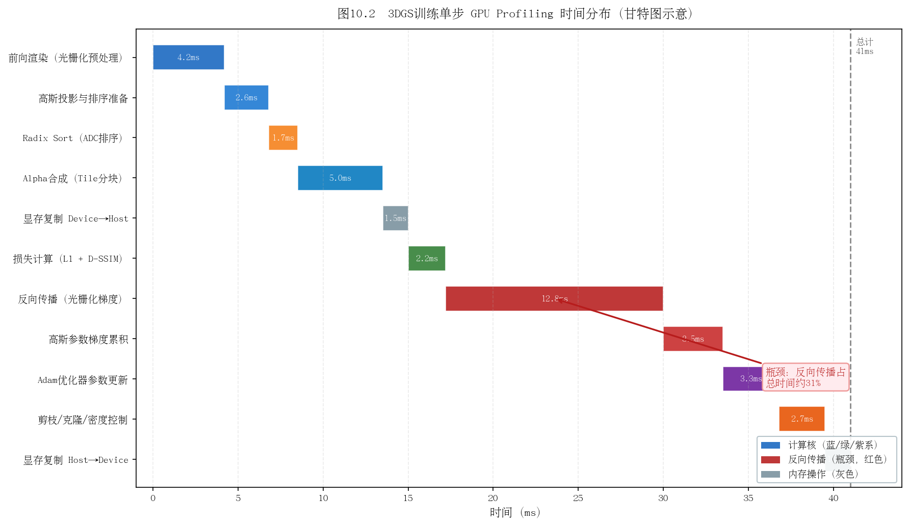
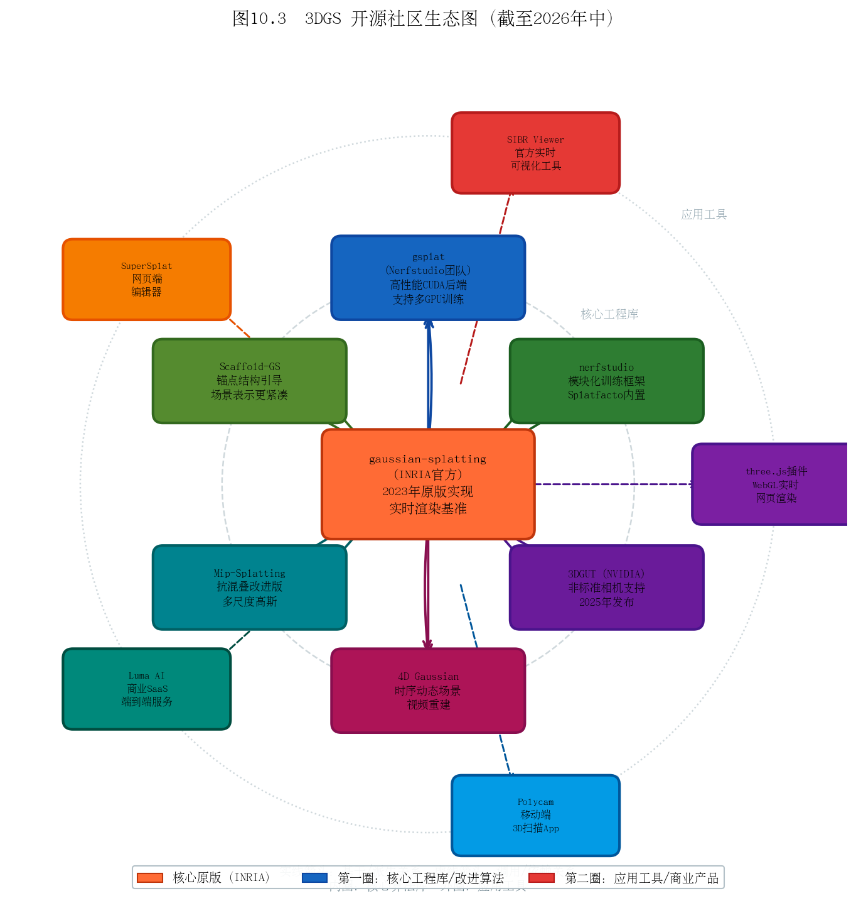

第十章：成为贡献者——如何迭代改进系统
读懂代码只是起点。本章讲如何在3DGS基础上做出真正的贡献。
10.1 建立可复现的实验基线
可复现性是一切的前提
在改进任何系统之前，首先要有一个可靠、可复现的基线（Baseline）。听起来简单，但实践中大量时间都浪费在"我不确定这次结果变好了是因为我的改动还是随机性"。
建立基线的工程规范：
``` project/ ├── configs/ │ ├── base_config.yaml # 所有实验共享的默认参数 │ └── exp_001_lr_tuning.yaml # 实验特定的参数覆盖 ├── runs/ │ ├── baseline_garden_20240601/ # 每次运行用日期+描述命名 │ └── exp_001_garden_20240605/ ├── results/ │ └── comparison_table.csv # 所有实验结果汇总 └── scripts/ └── run_baseline.sh ```
使用 Hydra 管理配置：
```yaml # base_config.yaml model: sh_degree: 3 iterations: 30000 training: densify_grad_threshold: 0.0002 lambda_dssim: 0.2 dataset: path: data/garden resolution: 1 ```
版本控制原则：
- 每个实验前打一个 git tag（`git tag exp_001_lr_tuning`）
- 实验配置文件进 git
- 实验结果不进 git（用 DVC 或 Wandb 管理大文件）
- commit message 写清楚"什么改动、为什么改、预期效果"
统一随机种子：
```python import random, numpy as np, torch def seed_everything(seed=42): random.seed(seed) np.random.seed(seed) torch.manual_seed(seed) torch.cuda.manual_seed_all(seed) ```
思考题：两次使用相同参数训练同一场景，PSNR 相差 0.3 dB。这个差异是"随机性"还是"真实差异"？如何设计实验来区分？（提示：多次运行取平均，计算标准差）
10.2 定位性能瓶颈
CUDA Profiling
在修改代码之前，先测量，不要猜测瓶颈在哪里。
Nsight Systems（NVIDIA，最全面）：
```bash # 记录 CUDA 时间线 nsys profile -o profile_output python train.py -s data/garden --iterations 100 # 用图形界面分析 nsys-ui profile_output.nsys-rep ```
PyTorch Profiler（集成方便）：
```python from torch.profiler import profile, ProfilerActivity, tensorboard_trace_handler with profile( activities=[ProfilerActivity.CPU, ProfilerActivity.CUDA], on_trace_ready=tensorboard_trace_handler('./log/profiler'), record_shapes=True, with_stack=True ) as prof: # 运行几步训练 for i in range(10): train_one_step() print(prof.key_averages().table(sort_by="cuda_time_total", row_limit=20)) ```
典型3DGS各阶段时间占比（30k迭代，室内场景）：
| 阶段 | 时间占比 |
|---|---|
| 前向渲染（CUDA光栅化） | ~45% |
| 反向传播 | ~40% |
| ADC（排序+剪枝） | ~5% |
| 数据加载 | ~5% |
| 其他 | ~5% |
前向+反向占85%，是性能优化的主战场。
内存带宽 vs 计算瓶颈
现代GPU的计算能力（TFLOPS）通常远大于内存带宽（GB/s）。判断瓶颈类型：
- 计算瓶颈（Compute-bound）：GPU利用率高（>90%），修改算法减少浮点操作
- 内存带宽瓶颈（Memory-bound）：GPU利用率低，大量时间在等数据。解决方案：提高数据局部性（共享内存）、减少全局内存访问
3DGS 的排序（Radix Sort）是典型的内存带宽瓶颈；光栅化核心（Alpha合成）接近计算瓶颈。

思考题：gsplat 相比官方实现在内存占用上减少了约30%。查阅 gsplat 的 release notes，找出主要的内存优化是在哪里实现的？
10.3 修改高斯基元的正确姿势
添加新属性
假设你要给每个高斯添加一个语义标签（整数类别ID），步骤如下：
1. 在 GaussianModel 中添加参数：
```python # scene/gaussian_model.py class GaussianModel: def __init__(self, sh_degree): # ... 原有参数 ... self._semantic_label = torch.empty(0) # 新增语义标签 def create_from_pcd(self, pcd, spatial_lr_scale): # ... 原有初始化 ... # 初始化为0（未知类别） self._semantic_label = torch.zeros( (fused_point_cloud.shape[0],), dtype=torch.long ).to(device) @property def get_semantic_label(self): return self._semantic_label ```
2. 在 PLY 保存/加载中添加对应字段：
```python def save_ply(self, path): # 原有字段保存 ... semantic = self._semantic_label.cpu().numpy().astype(np.uint8) # 加入到 elements 列表 ```
3. 如果需要可微，加入 optimizer：
```python def training_setup(self, training_args): l = [ # ... 原有参数组 ... {'params': [self._semantic_label], 'lr': 0.001, "name": "semantic"} ] self.optimizer = torch.optim.Adam(l, lr=0.0) ```
修改梯度流
如果要修改反向传播中梯度的计算方式（比如加入梯度裁剪或自定义梯度），需要了解3DGS梯度流的关键路径：
``` 渲染损失 L └─→ 渲染图像 I_hat └─→ CUDA光栅化器（前向/反向） └─→ 各高斯的 2D 贡献（μ', Σ', α, c） └─→ 球谐系数 f（颜色梯度） └─→ 不透明度 o（不透明度梯度） └─→ 协方差 Σ（形状梯度） └─→ 旋转 q 和缩放 s └─→ 位置 μ（位置梯度） ```
CUDA 扩展的修改： 如需修改光栅化本身（如加入深度平滑正则化），需要修改 `backward.cu`，这需要 CUDA 编程基础。推荐先阅读 gsplat 的实现（代码更清晰），再参考修改。
思考题：你想给高斯添加"法线向量"属性，并在训练中加入法线一致性损失。法线向量的梯度会影响哪些参数？需要修改 `backward.cu` 吗？
10.4 替代库：gsplat 与 nerfstudio
gsplat：高性能 3DGS 后端
gsplat 是 Nerfstudio 团队开发的3DGS后端，已成为社区最广泛使用的替代实现。
优势： - 内存效率：比官方实现低约30%内存占用 - API清晰：Python优先，更易于自定义扩展 - 活跃维护：修复官方实现的已知bug - 支持非标准相机：鱼眼、全景相机
```python # gsplat 的核心 API from gsplat import rasterization renders, alphas, info = rasterization( means=means3D, quats=rotations, scales=scales, opacities=opacities, colors=colors, viewmats=viewmats, Ks=intrinsics, width=W, height=H, render_mode="RGB+D", # 同时渲染颜色和深度 ) ```
nerfstudio：模块化训练框架
nerfstudio 提供了一套完整的NeRF/3DGS训练框架，内置 Splatfacto（3DGS实现）。
优势：统一的实验管理、内置可视化、配置系统完善。
```bash # 安装 nerfstudio pip install nerfstudio # 用 Splatfacto（3DGS）训练 ns-train splatfacto --data data/garden/ # 实时可视化 ns-viewer --load-config outputs/.../config.yml ```
Gaussian Opacity Fields（GOF）
GOF 用不透明度场替代显式alpha，允许从高斯场中提取精确的等值面（网格）。适合需要精确几何的任务。
```python # GOF 的核心思想：高斯贡献的不透明度场 def opacity_field(x, gaussians): contributions = [] for g in gaussians: # 每个高斯的不透明度贡献 d = x - g.mu contrib = g.alpha * exp(-0.5 * d.T @ inv(g.Sigma) @ d) contributions.append(contrib) return sum(contributions) # 可用于Marching Cubes ```
3DGUT：通用非结构化相机
3DGUT（NVIDIA 2025，arXiv:2312.02121）扩展3DGS支持任意相机模型（鱼眼、全景、车载广角）。工业数据集（如自动驾驶）通常使用非标准相机，3DGUT是处理这类数据的重要工具。
思考题：nerfstudio 的 Splatfacto 和原版 gaussian-splatting 仓库在 PSNR 上有微小差异。查阅 nerfstudio 的文档，找出两者实现上的主要差异（初始化方式？损失函数？优化器设置？）
10.5 消融实验设计
消融实验（Ablation Study）是证明你的改进"真实有效"的核心手段。
控制变量原则
每次只改一个变量：
``` 实验A：基准（原版3DGS） 实验B：加入你的改进X，其他一切不变 实验C：加入你的改进Y，其他一切不变 实验D：同时加入X和Y ```
比较 A→B→C→D 的结果，才能分离每个改进的贡献。
指标选取
- 通用NVS指标：PSNR / SSIM / LPIPS（必须报告）
- 任务特定指标：几何任务加Chamfer Distance；SLAM任务加ATE（绝对轨迹误差）；分割任务加mIoU
- 效率指标：训练时间、渲染FPS、显存占用、模型大小
不要只报告最好的数字——应在多个数据集上测试，报告平均值和标准差。
统计显著性
3DGS训练有随机性（Adam的随机性、初始化随机性），同一配置多次运行结果会有波动。
建议： 至少运行3次，报告均值±标准差：
``` 我们的方法在garden场景上PSNR为27.8±0.2 dB， 基准为27.4±0.2 dB，提升0.4 dB，t检验p<0.05，统计显著。 ```
如果PSNR提升只有0.1 dB但方差是0.3 dB，提升就不显著。
思考题：你提出了一个改进X，在5个场景中，3个场景PSNR提升，2个场景下降。这个改进是"成功"的吗？如何在论文中诚实地报告这个结果？
10.6 开源与投稿建议
顶会截止日期（2024-2026年参考）
| 会议 | 论文截止（通常） | 通知时间 | 举办时间 |
|---|---|---|---|
| CVPR | 11月 | 2月 | 6月 |
| ICCV | 3月 | 7月 | 10月（奇数年） |
| ECCV | 3月 | 7月 | 10月（偶数年） |
| SIGGRAPH | 1月 | 4月 | 8月 |
| NeurIPS | 5月 | 9月 | 12月 |
| ICLR | 10月 | 1月 | 5月 |
建议优先投 arXiv（不管是否投顶会），让社区尽早看到你的工作，收集反馈。
代码整洁度标准
开源代码是第二份"论文"，质量直接影响引用量：
``` ✓ 有详细的 README（安装、数据集、训练、测试命令） ✓ 有 requirements.txt 或 environment.yaml ✓ 核心逻辑有简短注释（但不要过度注释） ✓ 提供预训练模型（供快速复现） ✓ 有 demo 脚本（5行代码跑通基本功能） ✗ 避免 hardcode 路径（用 argparse 或 config） ✗ 避免未使用的 import 和注释掉的代码 ```
README 写法
好的 README 结构：
```markdown # 论文标题 [论文链接] [项目主页] [视频演示] [引用BibTeX] ## 效果展示（放最好的图） ## 安装 ## 快速开始（3步跑通demo） ## 训练 ## 评估 ## 预训练模型下载 ```
社区协作
- Issue：用户反馈的bug及时回复（<7天），是口碑的关键
- Pull Request：接受合理的改进PR，注明贡献者
- Discussion：参与3DGS相关的 Discord（如 3DGS Discord）和 Twitter 讨论
思考题：你的论文被顶会接收了，但代码还没准备好开源。应该在接收通知后多久内开源代码？不开源会有什么影响？
10.7 推荐学习资源汇总
论文阅读路径（建议顺序）
入门必读（按顺序）：
- NeRF (2020) — 理解体渲染和可微渲染
- Instant-NGP (2022) — 了解加速NeRF的思路
- 3DGS (2023) — 核心论文，反复读
- Scaffold-GS (2024) — 了解一种主流改进方向
- 2DGS (2024) — 了解几何改进方向
进阶精读（按兴趣选择）：
- 压缩方向：LightGaussian、Mini-Splatting
- 动态场景：4D Gaussians、Deformable 3DGS
- 语义理解：Gaussian Grouping、Feature 3DGS
- 工业应用：HUGSIM、DrivingGaussian
精选课程
| 课程 | 平台 | 特点 |
|---|---|---|
| Stanford CS231A | YouTube | 相机几何权威教程 |
| CMU 16-385 | YouTube | 完整计算机视觉 |
| Fast.ai Practical Deep Learning | fast.ai | 最实用的深度学习入门 |
| Nerfstudio Workshop | YouTube | 3DGS工程实践 |
活跃研究组（关注他们的论文）
| 研究组 | 机构 | 代表工作 |
|---|---|---|
| INRIA GraphDeco | 法国国家信息研究院 | 原版3DGS |
| Nerfstudio团队 | UC Berkeley | gsplat, nerfstudio |
| 汤晓鸥团队 | 商汤/CUHK | GaussianAvatars, SuGaR |
| Christian Theobalt团队 | MPI | Relightable 3DGS |
| 陈宝权团队 | 北京大学 | VastGaussian, CityGaussian |
| Qianqian Wang | Cornell | 4D Gaussians |
中文社区
- 知乎专栏：搜索"3DGS"，有大量中文解读和入门教程
- B站：多个UP主有3DGS视频教程（原理+实操）
- 微信公众号：极市平台、CVer、3D视觉工坊


全书总结
恭喜你读完这本教程！回顾整个学习旅程：
你已经掌握的：
- 从照片到三维的基本原理（相机模型、SfM、COLMAP）
- 高斯函数、球谐函数的数学基础
- 体渲染、Alpha合成的理论推导
- 3DGS完整算法：参数定义→投影→光栅化→ADC→损失
- 代码结构、训练评估、常见报错排查
- 数据采集、训练调参、部署的完整实践流程
- 2023-2026年主流改进方向的系统认知
你现在能做的：
- 用自己的数据训练高质量3DGS场景
- 阅读并理解领域前沿论文
- 在现有代码基础上添加新功能、设计消融实验
- 参与社区讨论，贡献开源代码
3DGS领域还在快速发展，当你读到这里时，可能又有新的突破性工作出现了。带着本书建立的基础，你已经具备追踪前沿、参与贡献的能力。
学习3DGS最好的时机是三年前，其次是现在。动手吧！
本章小结
- 可复现基线：Hydra配置管理、git版本控制、统一随机种子
- Profiling：Nsight Systems + PyTorch Profiler，前向+反向占85%时间
- 修改高斯基元：GaussianModel添加属性、optimizer注册、PLY格式更新
- 工具生态：gsplat（高性能后端）、nerfstudio（完整框架）、3DGUT（非标准相机）
- 消融实验：控制变量、多指标、多次运行报统计显著性
- 开源：好README + 预训练模型 + 及时响应issue
推荐阅读
- The Missing Semester of Your CS Education（MIT）— 工程规范基础
- Goodfellow et al., "Deep Learning" — 第8章优化器，第9章正则化
- ML Reproducibility Checklist — 机器学习可复现性标准清单